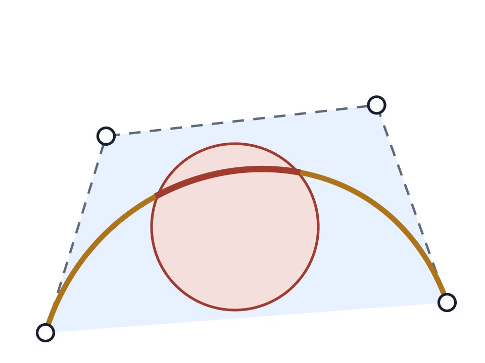
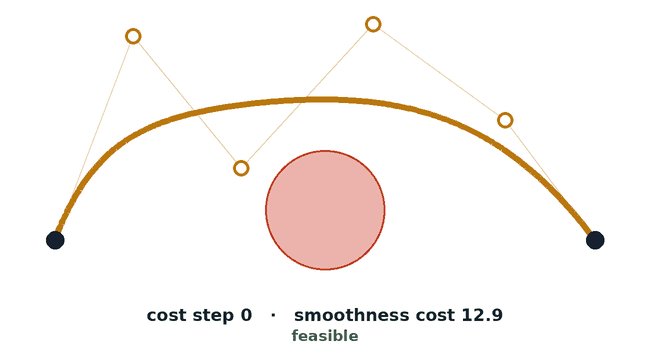
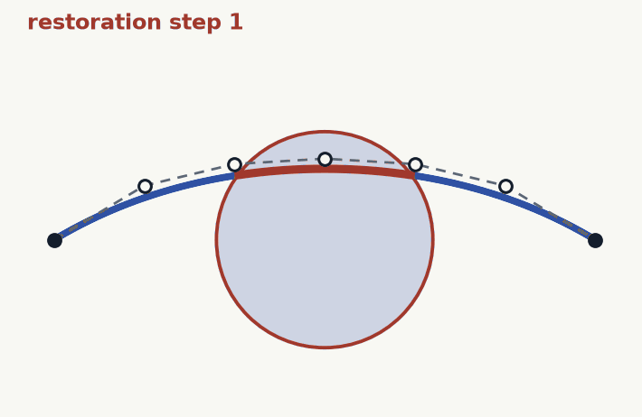

Planning and steering as one continuous-time program
GlobMP represents each motion as a piecewise polynomial, so every constraint, whether an obstacle, a separation between robots, or closeness to a learned policy's proposal, becomes a polynomial that must stay nonnegative over the whole motion, not only at sampled times. A gradient projection method alternates a step that lowers the smoothness cost with a restoration step that makes the curve feasible again. Every iterate stays feasible, and under mild assumptions the cost approaches the global optimum as the number of pieces grows.



Left: a polynomial curve is set by its control points and stays inside their convex hull; fixing the degree does not discretize time. Middle, cost step: only the free control points move, so the start and goal never change; the curve gets smoother but can enter an obstacle. Right, restoration: the free control points move the curve back out until every constraint holds at every instant. GlobMP alternates the two.
Performance
Tightness and cost on synthetic instances
Clearance of the returned trajectory on one instance (a) and on all instances (b), and cost relative to GlobMP against the number of robots (c). Below zero is a violation.
Applications
Multi-robot experiments
Robotarium, twelve robots, five scenarios, six planners (5× speed)
CD
MMD-CBS
PCD-SHD
Final Proj.
DiRecT
GlobMP (ours)
Extended benchmark, 3 to 21 robots (3 to 210 pair constraints, each at every instant), Medium velocity cap, mean over 8 maps. Left: single-plan success, GlobMP 99% → 81%. Right: planning time per team, log scale; GlobMP's time is a median and the baselines' a mean, as in the paper's tables.
Steering
Steering tactile-reactive dexterous policies on a bimanual humanoid
GlobMP steers the action chunks of a learned policy (GR00T N1.7, π0.5) on a bimanual robot with two XHAND1 hands. A meta-reasoner picks the constraint blocks once per episode, and GlobMP returns a curve that meets every block at every instant while staying close to the policy.
Steered motion planning, illustrated on the handover task: the meta-reasoner sets keep-out, keep-in and grip blocks once; then, for every chunk, the policy proposes ρ (grey, red where it would collide), GlobMP returns a smooth, collision-free curve γ close to it, and the robot executes it at 30 Hz. Measured events (stall, touch, grasp force) switch blocks and ρ with no further call. Schematic.
Real-robot success per task, 10 trials per bar, for each expert policy alone, with touch, steered, and steered with touch. Steering matches or raises every task; it turns the tissue task, which the policies alone rarely complete, into a mostly successful one, and brings the handover to every trial. A dash marks a condition that was not run.
Obstacle avoidance
Collision-free motion in end-effector space (D3IL avoiding-v0)
A planar end-effector must reach the goal while avoiding pillars. GlobMP is the projection step of DiRecT's diffusion sampler, compared with ten diffusion planners over 100 rollouts each.
The nine constrained baselines and GlobMP on the same task, each replaying four rollouts in the simulator and then showing all 100 paths. Navy is a safe episode, red a violating one; the hatched wedges and the lavender discs are the test-time constraints. The counter in each panel is the benchmark’s own criterion, so the final value is 100 minus that method’s safety rate in Table 3.Safety rate against task success, 100 episodes per method. Only the upper right both reaches the goal and avoids.
Maze2D
Safe navigation in a nonconvex maze (D4RL maze2d-large)
A point robot crosses a nonconvex maze while avoiding keep-out regions. GlobMP picks a corridor by breadth-first search and enforces the keep-outs in continuous time; GlobMP is deterministic, the ten baselines run 10 episodes each.
Broad setting. Dark stretches marked × are inside a keep-out; the badge counts runs that entered one.Narrow setting, with six keep-outs.What narrowing the maze does to each method: keep-out violations per executed run go from the Broad setting (open circle) to Narrow (filled), and success rate is shown on the right. Means over 10 episodes; GlobMP is deterministic. Only DiRecT and GlobMP stay at zero in both.
Quick Start
Code on GitHub and Hugging Face
git clone https://github.com/GlobalMotionPlanning/GlobMP.git
cd globmp
pip install -e .
python -m pytest globmp/tests # about 10 s on one CPU core
Citation
@article{amiri2026globmp,
title = {Continuous-Time Motion Planning and Steering with Global Convergence},
author = {Amiri, Mohsen and Didari, Sima and Ataee Tarzanagh, Davoud and Moon, Hankyu and Kwon, Yeongdae},
journal = {arXiv preprint},
year = {2026},
note = {Equal contribution: Amiri, Didari, Ataee Tarzanagh}
}
Acknowledgements
We thank the Georgia Tech Robotarium for access to its multi-robot testbed.